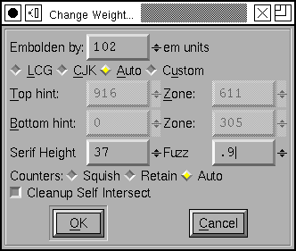
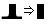
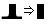
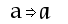
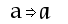
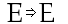
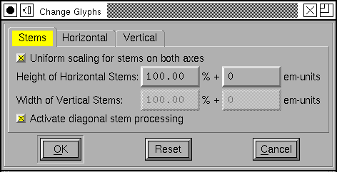
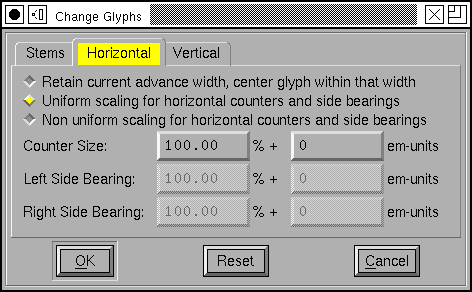
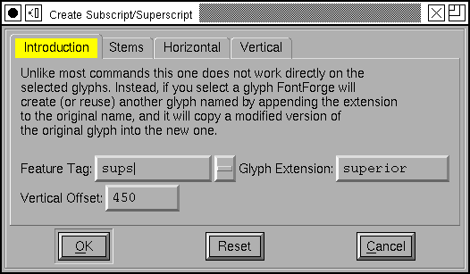

Stylistic Transformations on Fonts
- Change Weight dialog
- Italic dialog
- Condense/Extend dialog
- Change X-Height
- Change Glyphs
- Small Caps dialog
- Subscripts/superscripts dialog
The Style sub-menu provides a series of dialogs which allow you to create some common stylistic variations of latin fonts.
-
Stems and their widths
Modification of a Stem's width makes the font appear Bolder or Lighter -
Counters and their widths (a counter is the white space between stems)
Modification of a Counter's width makes the font appear Expanded or Condensed -
Left and Right Side Bearings
Behavior similar to Counter's
The results will probably always need to be examined and fixed up by the human eye, but they may provide a help in changing a font's attributes.
It "works" best on sans serif, non-Oblique fonts.
Bold
Bold fonts have thicker stems and are slightly more extended than normal fonts. In Knuth's Computers & Typesetting, the bold fonts have a stem width that is approximately 1.6 (1.68(at 12pt)-1.5(at 5pt)) times the stem width of the normal font. This is very similar to the 1.75 suggested by Microsoft's ratio of 700/400 (700 being the numeric weight of a bold font, and 400 being the numeric weight of a normal font).
In Knuth's Computer Modern Bold Extended Roman, the "m" glyph is extended to 1.15 times the width of the "m" in Computer Modern Roman, and the x-height is 1.03 times higher.
| Font | Ratio of Bold/Regular Stems | Ratio of DemiBold/Regular | Expansion | Bold serif height/Regular serif | Bold serif width/regular |
| Arial | 1.5 | 1 | |||
| Times New Roman | 1.7 | 1 | 1 | .98 | |
| Computer Modern Roman | 1.68(at 12pt) - 1.5(at 5pt) | 1.15 | |||
| Adobe Helvetica | 1.6 | ||||
| Adobe Times | 1.56 | 1.17 | 1.10 | .97 | |
| Garamond Antiqua | 1.5 | 1.05 | .90 | ||
Point Size
At first glance this does not seem like much of a transformation, after all postscript and truetype fonts can be drawn at any pointsize. But traditionally, as the point-size decreases the boldness (thickness of the stems) increases slightly, the counters and side bearings also change, and the overshoot increases. For metal type there were generally three drawings for a glyph in a given font, one for pointsizes less than 10, one for pointsizes 10,11 and 12, and one for display sizes (above 12). Most computer vector fonts do not show this change, while Knuth's Computer Modern fonts have a continuum:
| 17pt | 12pt | 10pt | 9pt | 8pt | 7pt | 6pt | 5pt | (12pt compared to cmr 12pt) | ||
|---|---|---|---|---|---|---|---|---|---|---|
| cmr | 83% | 100% | 109% | 116% | 120% | 124% | 130% | 139% | Computer Modern Roman | 100% |
| cmti | 100% | 106% | 112% | 115% | 122% | Computer Modern Text Italic | 94% | |||
| cmbx | 100% | 105% | 108% | 112% | 117% | 120% | 123% | Computer Modern Bold Extended | 170% | |
| cmtt | 100% | 109% | 116% | 120% | Computer Modern Typewriter | 100% | ||||
| cmss | 99% | 100% | 102% | 109% | 113% | Computer Modern Sans Serif | 120% |

To the left is an example of the same word (taken from a font specimen sheet) printed at 3 different point sizes (8,12 and 24) and then scaled up to the same size. The most obvious difference is that the glyphs are proportionally wider at the smaller pointsizes. It is less apparent that the stems of the letters are different:
| 24pt | 12pt | 8pt | |
|---|---|---|---|
| stem of the "n" (compared to 12pt) | 89% | 100% | 117% |
| counter of the "n" (compared to 12pt) | 104% | 100% | 89% |
| width of "originality" (compared to 12pt) | 93% | 100% | 104% |
SmallCaps
A SmallCaps font is made by scaling the capital letters approximately to the x-height (so that they are the same height as lower case letters without ascenders) and then adjusting the stem widths (emboldening) so that they too will match stem widths of the lower case.
Italic
The Italic transformation contains at least five parts: A change in the letterforms of the lowercase letters, a slight decrease in x-height, a skew, and a condensation and a narrowing of the vertical stems..
| Italic Angle | Condensation | Stem width change | X-Height change | |
| Computer Modern Text Italic | 14º | 91% | 94% | 100% |
| Times New Roman | 16º | 100% | 91% | 96% |
| Adobe Times | 15 | 100% | 92% | 95% |
Letterform changes in Galliard:

Letterform changes in
Caslon:
(These glyphs have been deskewed to display the shape transformation
better.)
Cyrillic Letterform
changes:
(These glyphs are also deskewed.)
This is not a complete list, but it shows most of the salient features of such a transformation.
Oblique
The Oblique transformation is a simple skew,
| Computer Modern Slanted Sans Serif | 9.5º |
| Arial Italic (actually an oblique) | 12º |
| Adobe Helvetica Oblique | 12º |
Extended/Condensed
In these two transformations the stem width is held constant but the horizontal counter sizes and side bearings are increased (or decreased for condensed).
The Change Weight dialog
The Change Weight dialog starts out by stroking the glyph (Element->Expand Stroke) and removing the internal contour. This means that each stem in the glyph will now be wider by the number of em units specified at the top of the dialog. Of course, this number may be negative, in which case you will be making a lighter, rather than a bolder variant of the glyph.
You may find that in some cases the Change Glyph dialog will do a better job of emboldening or thinning a font. Instead of increasing all stems by the same fixed amount it will increase the thickness of each stem proportionate to its current thickness.
 For CJK fonts,
with complex shapes but without the constraint of the latin baseline and
cap height, this expansion is probably enough. The image at right shows the
Hiragana DA syllable -- the original glyph shape is in the background, and
the expanded shape is in the foreground.
For CJK fonts,
with complex shapes but without the constraint of the latin baseline and
cap height, this expansion is probably enough. The image at right shows the
Hiragana DA syllable -- the original glyph shape is in the background, and
the expanded shape is in the foreground.
However if we do that to a latin (or Greek, or Cyrillic) glyph the result is rather odd because the glyph no longer rests on the baseline, and also extends above the cap-height (or x-height, or whatever line bounds this particular glyph).
|
|
|
 |
| Here the glyph has been expanded as if it were a CJK glyph. Note that it now extends below the baseline and above the cap height. That is not good. | Here the glyph has been expanded as before, but the bottom stem has been
moved up just enough so that it now rides on the base line, and the top stem
has been moved down so it sits on the cap height.
But the counters are now much narrower than they were in the original glyph, and the left and right side bearings have become squeezed. |
In the final example, the glyph is expanded, the top and bottom stems moved appropriately, the side bearings restored to their original size, and the internal counters expanded to be closer to their original size. | Now consider the case of a serifed font. The serifs on the B above have become huge, disproportionally bigger than they were in the original glyph. |


Going back to the original dialog. The first field specifies the amount by which each stem should get bigger.
The radio buttons let you choose which method to use. CJK simply expands the glyph and leaves it at that. LCG expands the glyph and then forces it between the baseline and caps/x-height. Auto will chose which of those methods to apply. Custom will basically use the LCG method but allows you to specify, manually, what the interesting regions are in this particular glyph.
Any point above or on "Top Hint" will be moved down. Or if a point is on a hint which surrounds "Top Hint" it will also be moved down. (Points on the top stem of "B")
Any point below or on "Bottom Hint" will be moved up. Or if a point is on a hint which surrounds "Bottom Hint" it will also be moved up. (Points on the bottom stem of "B")
Any point which is on a hint which falls somewhere between Top Zone and Bottom Zone will be fixed where it is. (Points on the middle stem of "B").
Any point which is Serif Height above the "Bottom Hint" (or Serif Height below Top Hint) will remain where it is, meaning that some simple serifs will not be expanded to an inappropriate size.
Any other points will be interpolated between the points which move (rather like the TrueType IUP instruction -- indeed, the process of making a glyph bolder is very like instructing a glyph).
[] Cleanup Self Intersect has the same meaning as the same field in the Expand Stroke dialog.
And for the counters, <> Squish will result in the small counters that come from expanding the glyph without doing anything to the counters, <>Retain will attempt to retain the counters, and <>Auto will Squish CJK glyphs and Retain LCG glyphs.
Italic dialog
Let me reiterate that the italic transformation is quite different and much more complex than the oblique transformation. Oblique fonts are made by the same simple mathematical operation applied to the entire font. The italic transformation can be different for each glyph.
Let me further add that FontForge will never be able to do everything that should be done to make a good italic font from an upright font. It may provide a helpful starting point. Some of my friends who know more about typography than I have urged me not to write this dialog, saying that each italic font should be made by hand, and there is much truth to their view. I made the dialog anyway because I found it interesting to do so. Be warned: It isn't complete. You need to examine what it has done and be prepared to redo many characters (especially lower case letters) which it has not been able to adapt.
The complexities of italic design stem from its origin. The Latin alphabet as we now know it evolved over time. The upper case letters come from the style the Romans used when carving inscriptions on their monuments. The lower case letters come from a monastic script style, uncials, which were later paired with the monumental capitals. The italic hand was another script, initially monocase. Just as the lower case letters come from a different stylistic tradition than the upper case (and hence look markedly dissimilar) so the italic lower case comes from yet another tradition and looks different from upright forms. Italic upper case were a much later addition and are also based on the monumental capitals.
The italic lower case is
- slanted -- this is extremely obvious (so obvious that when I compare upright and italic glyphs I always deslant the italic to make other differences more visible)
- condensed -- less obvious. Generally it will be condensed by about 90% which isn't noticeable unless you look hard. Stems may be condensed at a different percentage than counters (indeed, different stems may be condensed differently, but fontforge doesn't support that because I don't find any consistency in behavior to emulate).
- smaller x-height -- because a slanted line that reaches from baseline to a given height is longer than the corresponding vertical line, it will also appear (to the eye) to be slightly higher. To correct for this optical illusion, the x-height of an italic font will generally be a little lower than the xheight of its companion roman font. Note -- if the xheight changes, you should adjust the BlueValues (and perhaps the FamilyBlues) with the Font Info dialog.
-
more flowing -- This may be extremely
obvious
 or more subtle -- in
some fonts even the apparently straight sides of "l" will have a slight curve
to them.
or more subtle -- in
some fonts even the apparently straight sides of "l" will have a slight curve
to them.
-
different serifs -- The baseline serifs for the last stem on a glyph change
 , while those of intermediate
stems become degenerate
, while those of intermediate
stems become degenerate
-
different letterforms -- Some letters simply have different shapes in italic:
 


The italic upper case is also slanted (and by the same angle), generally condensed (but often less so than the lower case), and usually its serifs and letter forms do not change significantly (though there can be exceptions: )
In typographic tradition serifed fonts have a paired italic font, while sans-serif fonts have an oblique font.
 The italic
dialog attempts to give you control over as much of this as fontforge thinks
it can do. The dialog displays the steps mentioned above, but backwards.
The italic
dialog attempts to give you control over as much of this as fontforge thinks
it can do. The dialog displays the steps mentioned above, but backwards.
First there are a series of check boxes for gross letterform changes. The "a" glyph generally turns into a something that looks like the "d" glyph without the ascender. The "f" glyph has (at least) two variants -- in one the curved top is duplicated at the bottom, and in the other the main stem is extended below the baseline but the serif is removed.
In actual practice these changes are more complex. If examined closely the bottom part of the f doesn't look precisely like the top. FontForge isn't up to such subtleties however.
The [] f checkboxes control additional characters which are similar to "f", "long-s" for example, also the "fi", "fl", "ff", "ffi", "ffl", "longs_longs", "longs_t", etc. ligatures. FontForge determines what glyphs it applies to by examining the glyph name and unicode encoding; it does NOT do a sophisticated analysis of the glyph's shape.
This does not exhaust the list of changes that could or should be done --
Merely the list of what FontForge thinks it can do. There should also be
checkboxes for:


 and many more.
and many more.
FontForge will change serifs in various places.
-
baseline serifs -- The final stem of a glyph almost always undergoes a serif
transformation at the baseline. Previous stems generally have their serifs
become degenerate (flat lines)
 .
This transformation almost always happens.
.
This transformation almost always happens.
- xheight serifs -- This transformation frequently happens.
- ascender serifs -- This transformation happens occasionally. Sometimes the serif becomes very swash, somethings nothing changes.
- descender serifs -- Usually serifs on descenders degenerate into flat lines.
-
diagonal serifs -- This transformation usually happens

When a serif becomes degenerate (as the first two do in the "m" above) they often become flat with the baseline, but sometimes they will have a slant to them.
Next is a matrix of compression factors (expressed as percentages). You can control left and right side bearings, as well as stem and counter widths. You may specify different values for lower case, upper case and symbols.
Finally we come to the italic angle. This will generally be between -10 and
-15 degrees.
Condense/Extend
dialog
This dialog allows you to change counter sizes without changing stem sizes (in theory. It doesn't work too well with diagonal stems). You can make counters bigger or smaller by a percentage, or by adding a fixed amount to them.
If the font has and Italic Angle specified in Font Info, then fontforge will
first unskew the glyph in the hopes of getting some vertical stems, then
Condense it, and the reskew it.
Change X-Height
dialog
This changes the x-height of a font. The dialog shows the current x-height
(or what it thinks is the current x-height), and you can chose an new value
for it. If the font has serifs and you don't want the serifs to change in
height then specify the current serif height. If you do want the serifs to
change, then set this field to 0.
Change Glyphs dialog
The change glyphs dialog allows you to do a number of changes to all the currently selected glyphs. It can
- Increase or decrease the stem size (making the font bolder or less bold)
- Change the size of horizontal counters (Condense/Extend)
- Manipulate alignment zones with respect to one another (Change the x-height)
The dialog has three panes; each controls one of these funtions.
The first dialog affects the stem width (or height, as the case may be). In most cases you will want to scale horizontal and vertical stems by the same proportion, so there is a check box to fix them together.
Generally you will also want to control diagonal stems to, but there are still times when the algorithm is less than perfect.
Generally a proportional scale is more appropriate than adding a fixed amount to each stem -- at least for Latin glyphs. But there may be cases where you do what to add a fixed amount.
There are a few restrictions if you specify an additive amount here (again due to imperfections of the algorithm). The additive amounts must have the same sign for both horizontal and vertical stems (both negative, both zero, or both positive). And the ratio of the two can't be more than 4.
You have various options for controlling horizontal contours. For monospace fonts (or CJK fonts) you probably want to select the first option. For proportional Latin fonts, select one of the other two.
 Latin
glyphs are asymetric in their behavior along the horizontal and vertical
axes. Vertically glyphs are aligned at certain fixed heights (baseline, x-height,
cap-height, etc.), while horizontally there are no corresponding alignment
zones. So the vertical part of this dialog looks quite different from the
horizontal.
Latin
glyphs are asymetric in their behavior along the horizontal and vertical
axes. Vertically glyphs are aligned at certain fixed heights (baseline, x-height,
cap-height, etc.), while horizontally there are no corresponding alignment
zones. So the vertical part of this dialog looks quite different from the
horizontal.
In CJK glyphs it may make sense to control vertical glyphs.
But in latin it makes more sense to map alignment zones. Here there is a
overall (default) scaling factor. If you don't adjust the zones yourself
then changing the scale factor will change the "Resultant Y Position" by
the obvious amount.
Small Capitals
dialog
This dialog allows you to create a series of small caps glyphs. As the dialog says, it is unlike most commands in that it does not change the selected glyphs, instead it uses them to decide what glyphs to create (or if the glyphs already exist, what glyphs to change).
So if you select "A" FontForge will create a glyph named "a.sc" copy the outlines of "A" into that glyph, and then modify them. If you select lower case "a", FontForge will again create "a.sc" and will copy the outlines of upper case "A".
FontForge will also create two lookups, one which maps upper case letters to small caps variants, and the other which maps lower case letters to the small caps glyph. These will be bound to the "c2sc" and "smcp" features respectively.
OpenType supports two different variants of small caps, the normal small caps, and something called petite caps. Petite caps should be smaller than small caps (the example given in the opentype docs is for a font with a small x-height, small caps will be bigger than the x-height and petite caps will be at the x-height). Like small caps, there are two features for petite caps: "c2pc" and "pcap" (capital to petite caps and lowercase to petite caps).
If you turn on the [] Create small caps variants for symbols
checkbox, then any selected symbols will also be converted. However most
symbols don't have upper and lower case variants (one could argue that digits
do, but I shall ignore that complication here), so each selected symbol glyph
will get both feature mappings attached to it. Furthermore, symbols seem
to use a different glyph extension so the created glyphs will be
"nine.taboldstyle" rather than "nine.sc".
The default behavior is to transform the outlines by scaling the upper case outlines so that the cap height becomes the small cap height, and scaling the stems so that the upper case stem width becomes the lower case stem width. Often the small cap height will be a little taller than the x-height -- though the exact value will change from font to font -- the x-height is as good a default as any. If you do not like the default behavior you have all the options of the Change Glyphs dialog to play with.
Note: The default sizes are the
same for both small caps and petite caps. If you want both features you will
need to change settings for at least one of them!
Subscipt/Superscript dialog
There are several OpenType features which produce small variants of standard glyphs. Often the stems are scaled differently (made bolder) from the remainder of glyph.
As with the previous dialog this one does not modify the selected glyphs. Instead it uses their outlines to create new glyphs (with the indicated glyph extension) and creates a lookup mapping the original glyph to the new glyph.
So in the example at right, if you selected all the digits, then FontForge
would create a new set of glyphs named "zero.superior", "one.superior" ...
"nine.superior". It would create a new lookup bound to the feature "sups"
which would map "zero" to "zero.superior", etc. By default each new glyph
will be scaled down to be 2/3rds the original size, but the stems
would only be scaled by 3/4 (so the glyph will look proportionately darker).
Finally each new glyph will be moved up by 450 em-units. Again if you don't
like these defaults you have all the options of the
Change Glyphs dialog to play with.
Caveat
Then the bowsprit got mixed with the rudder sometimes,
A thing as the Bellman remarked
That frequently happens in tropical climes,
When a vessel is, so to speak, "Snarked".The Hunting of the Snark, Lewis Carroll
 These commands
are not perfect. If there just isn't room in the glyph for the desired
transformation contours may overlap. Do look at your results and be prepared
to fix them up.
These commands
are not perfect. If there just isn't room in the glyph for the desired
transformation contours may overlap. Do look at your results and be prepared
to fix them up.